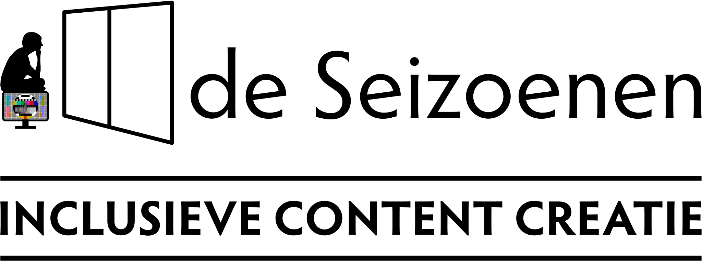

Video productiehuis de Seizoenen zet mensen met een beperking centraal. We hebben een rijke ervaring in het creëren van videocontent voor campagnes op sociale media en journalistieke fora. Een videoclip? Een online documentaire? Een tiktokvideo? Jij bepaalt de content en het platform.
over ons